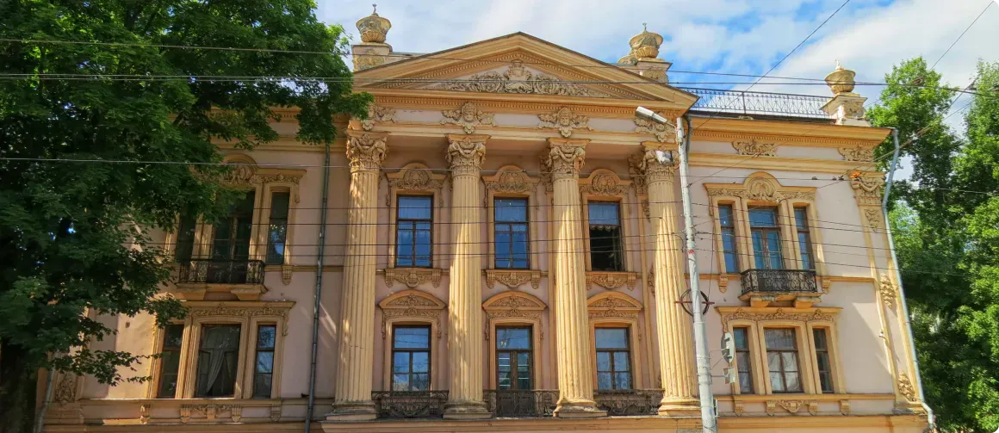

Дворец Алфераки
Что еще обязательно надо посмотреть в Таганроге? Дворец Алфераки — самое красивое здание, возведенное в 1848 году богатым купцом Алфераки ставший одной из ярких достопримечательнстей. Построено в стиле нового барокко — стены и потолки богато украшены лепниной, сделанной лучшими мастерами Италии, роскошная мебель ручной работы. Архитектор — известный и востребованный в то время мастер Штакеншнейдер.
Показать на карте